DataFrame查询
学习目标
- 能够进行 DataFrame 的条件查询操作
- 能够进行 DataFrame 的分组聚合操作
- 能够进行 DataFrame 的排序操作
- 能够使用 nlargest 和 nsmallest 函数
- 了解简单的 pandas 画图操作
1. DataFrame 条件查询操作
基本格式：
| 方式 | 说明 |
|---|---|
df.loc[条件...]或df[条件...] |
获取 DataFrame 中满足条件的数据 |
df.query('条件...') |
获取 DataFrame 中满足条件的数据 |
注意：loc 和 query 中可以跟多个条件，可以使用 &(与)、|(或) 表示条件之间的关系。
1）加载 scientists.csv 数据集
scientists = pd.read_csv('./data/scientists.csv')
scientists
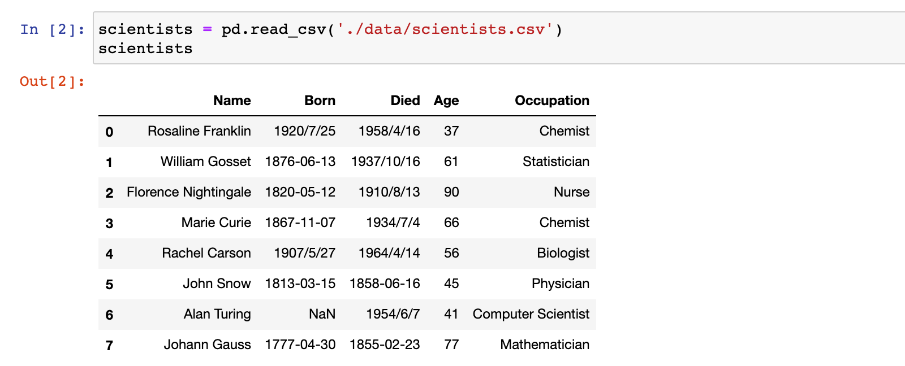
2）示例：获取 Age 大于 60 且 Age < 80 的科学家信息
# scientists[(scientists['Age'] > 60) & (scientists['Age'] < 80)] 和下面效果等价
scientists.loc[(scientists['Age'] > 60) & (scientists['Age'] < 80)]
或
# scientists[(scientists.Age > 60) & (scientists.Age < 80)] 和下面效果等价
scientists.loc[(scientists.Age > 60) & (scientists.Age < 80)]
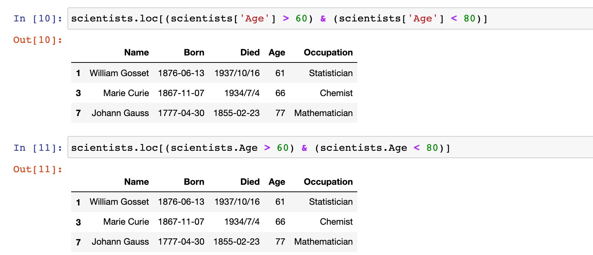
scientists.query('Age > 60 & Age < 80')
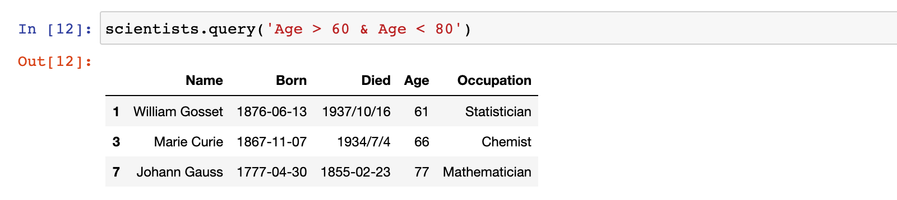
3）示例：筛选出职业是 Chemist 和 Nurse 的科学家数据
# 判断每一行的 Occupation 值是否是 'Chemist' 或 'Nurse'，结果是 bool 序列
scientists.Occupation.isin(['Chemist', 'Nurse'])
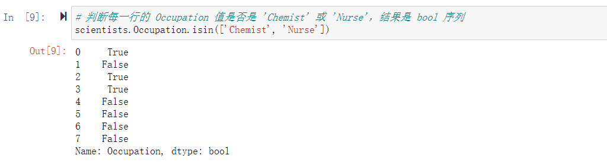
scientists[scientists.Occupation.isin(['Chemist', 'Nurse'])]
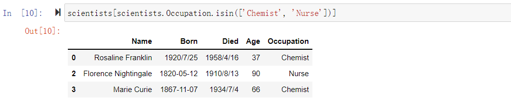
2. DataFrame 分组聚合操作
基本格式：
| 方式 | 说明 |
|---|---|
df.groupby(列标签, ...).列标签.聚合函数()或 df.groupby(列标签, ...)[列标签].聚合函数() |
按指定列分组，并对分组 数据的相应列进行相应的 聚合操作 |
df.groupby(列标签, ...).agg({'列标签': '聚合', ...})或 df.groupby(列标签, ...).aggregate({'列标签': '聚合', ...}) |
按指定列分组，并对分组 数据的相应列进行相应的 聚合操作 |
常见聚合函数：
| 方式 | 说明 |
|---|---|
mean |
计算平均值 |
max |
计算最大值 |
min |
计算最小值 |
sum |
求和 |
count |
计数(非空数据数目) |
1）示例：按照 Occupation 职业分组，并计算每组年龄的平均值
scientists.groupby('Occupation')['Age'].mean()
或
scientists.groupby('Occupation').Age.mean()
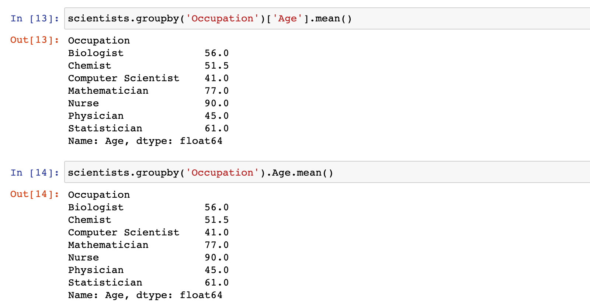
2）示例：按照 Occupation 职业分组，并计算每组的人数和年龄的平均值
scientists.groupby('Occupation').agg({'Name': 'count', 'Age': 'mean'})
或
scientists.groupby('Occupation').aggregate({'Name': 'count', 'Age': 'mean'})
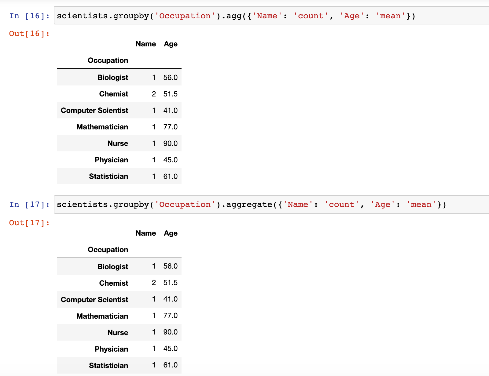
3. DataFrame 排序操作
基本格式：
| 方法 | 说明 |
|---|---|
df.sort_values(by=['列标签'], ascending=True) |
将 DataFrame 按照指定列的数据进行排序： ascending 参数默认为True，表示升序； 将 ascending 设置为 False，表示降序 |
df.sort_index(ascending=True) |
将 DataFrame 按照行标签进行排序： ascending 参数默认为True，表示升序； 将 ascending 设置为 False，表示降序 |
1）示例：按照 Age 从小到大进行排序
# 示例：按照 Age 从小到大进行排序
scientists.sort_values('Age')
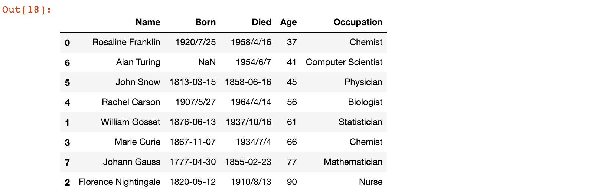
2）示例：按照 Age 从大到小进行排序
# 示例：按照 Age 从大到小进行排序
scientists.sort_values('Age', ascending=False)
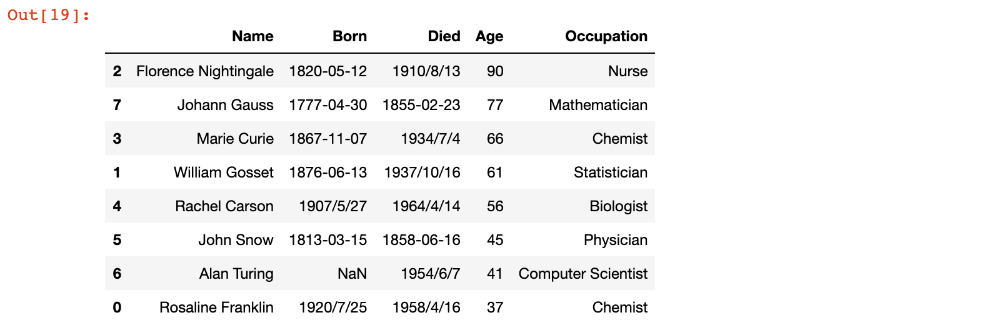
3）示例：按照行标签从大到小进行排序
# 示例：按照行标签从大到小进行排序
scientists.sort_index(ascending=False)
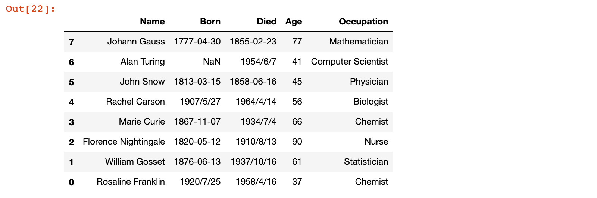
补充：Series 也可以使用 sort_values 和 sort_index 函数进行排序，只不过 Series 的 sort_values 方法没有 by 参数
# 按照 Series 数据的值进行排序
scientists['Age'].sort_values()
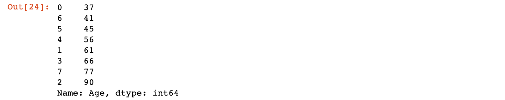
# 按照 Series 数据的标签进行排序，此处为降序
scientists['Age'].sort_index(ascending=False)
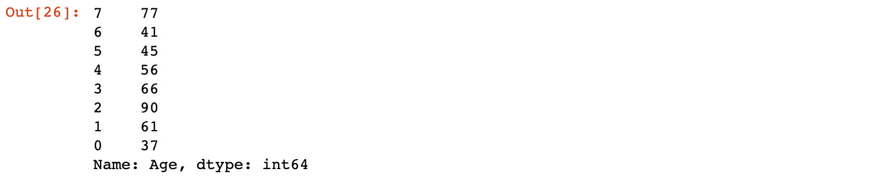
4. nlargest 和 nsmallest 函数
基本格式：
| 方法 | 说明 |
|---|---|
df.nlargest(n, columns) |
按照 columns 指定的列进行降序排序，并取前 n 行数据 |
df.nsmallest(n, columns) |
按照 columns 指定的列进行升序排序，并取前 n 行数据 |
1）示例：获取 Age 最大的前 3 行数据
# 示例：获取 Age 最大的前 3 行数据
scientists.nlargest(3, columns='Age')
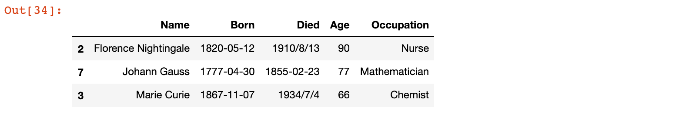
2）示例：获取 Age 最小的前 3 行数据
# 示例：获取 Age 最小的前 3 行数据
scientists.nsmallest(3, columns='Age')
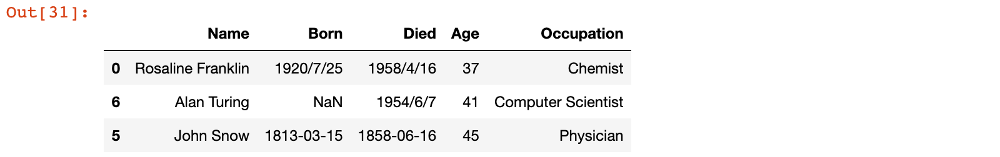
5. 基本绘图
安装 matplotlib 扩展包：
# 注意先进入自己的虚拟环境，然后再安装 matplotlib 扩展包
pip install matplotlib -i https://pypi.tuna.tsinghua.edu.cn/simple/
可视化在数据分析的每个步骤中都非常重要，在理解或清理数据时，可视化有助于识别数据中的趋势，比如我们计算不同职业的科学家的平均寿命：
scientists_avg_age_by_occupation = scientists.groupby('Occupation').Age.mean()
scientists_avg_age_by_occupation
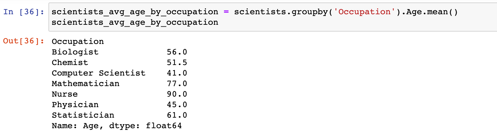
可以通过plot函数画图，通过图片更直观的得出结论：
# 设置 jupyter 内嵌 matplotlib 绘图
%matplotlib inline
# 绘图
scientists_avg_age_by_occupation.plot(figsize=(20, 8))
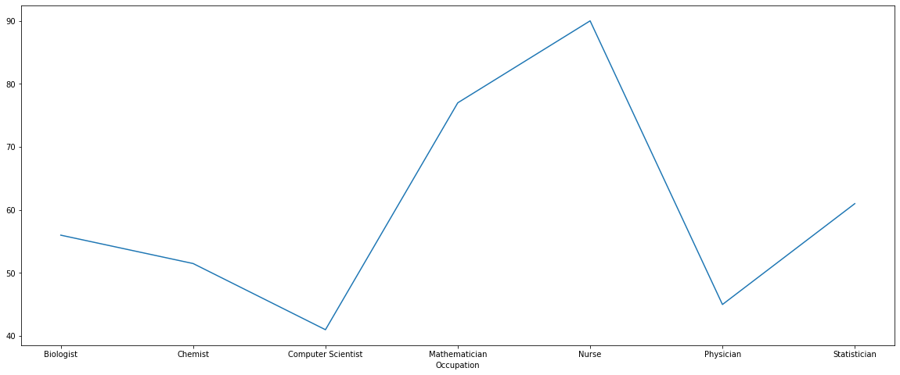
总结
- 能够进行 DataFrame 的条件查询操作
- loc、query
- 能够进行 DataFrame 的分组聚合操作
- groupby、agg、aggragate
- 能够进行 DataFrame 的排序操作
- sort_values、sort_index
- 能够使用 nlargest 和 nsmallest 函数
- nlargest、nsmallest
- 了解简单的 pandas 画图操作